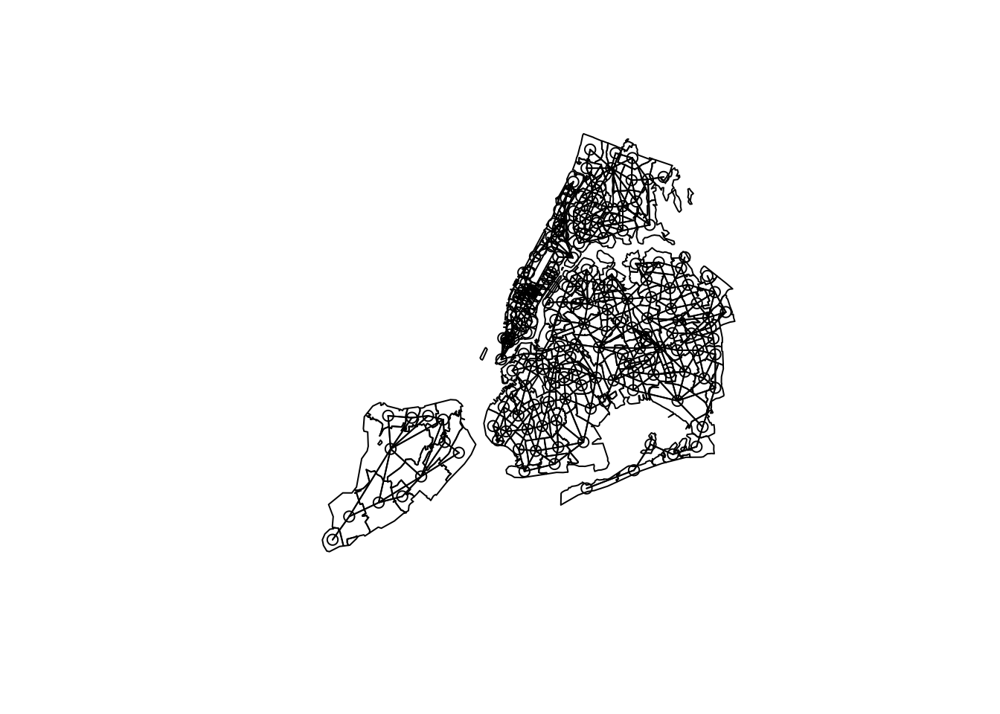
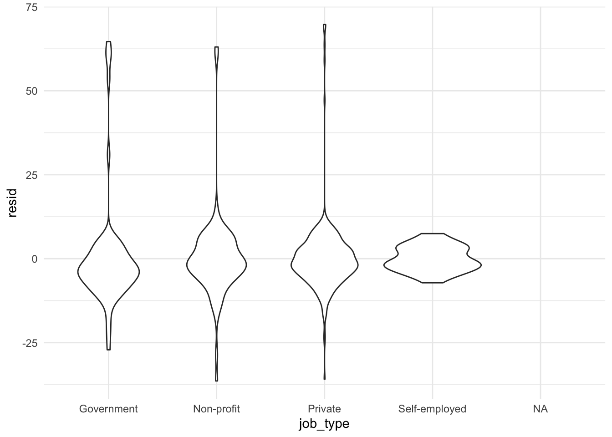
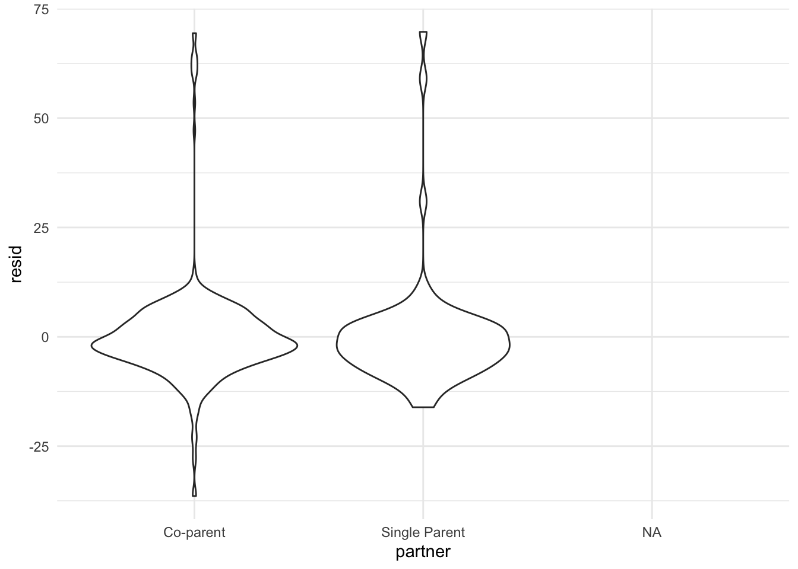
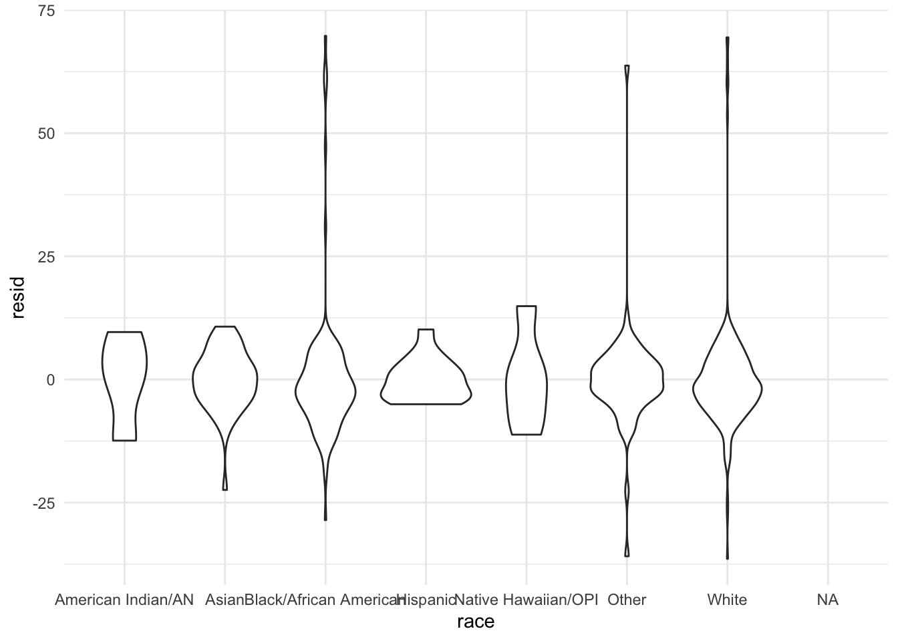

library(tidyverse)
library(spdep)
library(maptools)
library(rgdal)
library(spatialreg)
library(sf)
unpaid_poly <- readOGR(dsn = "nyc_only_zips.shp", layer = "nyc_only_zips")## OGR data source with driver: ESRI Shapefile
## Source: "/Users/akanksha/Documents/Fall2020/DataScience/p8105_maternity_leave_nyc/map/nyc_only_zips.shp", layer: "nyc_only_zips"
## with 185 features
## It has 19 fields
## Integer64 fields read as strings: ALAND10 AWATER10 leavetype parenttype leaveweeks wksunpaid edtype race jobtypefixnames(unpaid_poly)## [1] "ZCTA5CE10" "AFFGEOID10" "GEOID10" "ALAND10" "AWATER10"
## [6] "leavetype" "parenttype" "leaveweeks" "wksunpaid" "X.unpaid"
## [11] "edtype" "race" "jobtypefix" "X.food_inse" "X.family_in"
## [16] "X.postpartu" "X.mean_leav" "X.borough" "X.neighborh"unpaid_nbq <- poly2nb(unpaid_poly)coords <- coordinates(unpaid_poly)
plot(unpaid_poly)
plot(unpaid_nbq, coords, add=T)
summary(unpaid_nbq)## Neighbour list object:
## Number of regions: 185
## Number of nonzero links: 830
## Percentage nonzero weights: 2.425128
## Average number of links: 4.486486
## 1 region with no links:
## 26
## Link number distribution:
##
## 0 1 2 3 4 5 6 7 8 9 11
## 1 7 18 29 33 51 24 13 5 3 1
## 7 least connected regions:
## 35 56 64 70 115 137 146 with 1 link
## 1 most connected region:
## 145 with 11 linksunpaid_nbq_w <- nb2listw(unpaid_nbq, zero.policy=TRUE)unpaid_poly$swksunpaid <- scale(as.numeric(unpaid_poly$wksunpaid))
unpaid_poly$lag_sWU <- lag.listw(unpaid_nbq_w, unpaid_poly$swksunpaid, zero.policy=TRUE, NAOK=TRUE)## Warning in lag.listw(unpaid_nbq_w, unpaid_poly$swksunpaid, zero.policy = TRUE, :
## NAs in lagged valuessummary(unpaid_poly$swksunpaid)## V1
## Min. :-0.71591
## 1st Qu.:-0.71591
## Median :-0.21390
## Mean : 0.00000
## 3rd Qu.: 0.08731
## Max. : 4.50496
## NA's :70summary(unpaid_poly$lag_sWU)## V1
## Min. :-0.71591
## 1st Qu.:-0.32685
## Median :-0.09342
## Mean : 0.06246
## 3rd Qu.: 0.30819
## Max. : 1.49292
## NA's :149names(unpaid_poly)## [1] "ZCTA5CE10" "AFFGEOID10" "GEOID10" "ALAND10" "AWATER10"
## [6] "leavetype" "parenttype" "leaveweeks" "wksunpaid" "X.unpaid"
## [11] "edtype" "race" "jobtypefix" "X.food_inse" "X.family_in"
## [16] "X.postpartu" "X.mean_leav" "X.borough" "X.neighborh" "swksunpaid"
## [21] "lag_sWU"head(unpaid_poly)## ZCTA5CE10 AFFGEOID10 GEOID10 ALAND10 AWATER10 leavetype parenttype
## 0 10040 8600000US10040 10040 988493 0 2 2
## 1 11207 8600000US11207 11207 6920385 0 2 2
## 2 10456 8600000US10456 10456 2635671 0 1 1
## 3 11417 8600000US11417 11417 2898418 0 <NA> 1
## 4 11104 8600000US11104 11104 1005110 0 2 1
## 5 10024 8600000US10024 10024 2222641 0 2 1
## leaveweeks wksunpaid X.unpaid edtype race jobtypefix X.food_inse
## 0 48 48 100 6 8 2 0
## 1 4 4 100 4 1 2 1
## 2 8 0 0 5 1 2 1
## 3 <NA> <NA> NA 4 1 <NA> 1
## 4 4 4 100 6 1 3 0
## 5 6 6 100 6 1 4 0
## X.family_in X.postpartu X.mean_leav X.borough
## 0 Less than $16,000 yes NA Manhattan
## 1 NA yes NA Brooklyn
## 2 $20,001 to 40,000 yes NA Bronx
## 3 NA yes NA Queens
## 4 More than $85,000 yes NA Queens
## 5 NA yes NA Manhattan
## X.neighborh swksunpaid lag_sWU
## 0 Inwood and Washington Heights 4.1033589 -0.3142998
## 1 East New York and New Lots -0.3142998 NA
## 2 High Bridge and Morrisania -0.7159052 NA
## 3 Southwest Queens NA NA
## 4 Northwest Queens -0.3142998 NA
## 5 Upper West Side -0.1134972 NAunpaid_data <- as.data.frame(unpaid_poly)
head(unpaid_data)## ZCTA5CE10 AFFGEOID10 GEOID10 ALAND10 AWATER10 leavetype parenttype
## 0 10040 8600000US10040 10040 988493 0 2 2
## 1 11207 8600000US11207 11207 6920385 0 2 2
## 2 10456 8600000US10456 10456 2635671 0 1 1
## 3 11417 8600000US11417 11417 2898418 0 <NA> 1
## 4 11104 8600000US11104 11104 1005110 0 2 1
## 5 10024 8600000US10024 10024 2222641 0 2 1
## leaveweeks wksunpaid X.unpaid edtype race jobtypefix X.food_inse
## 0 48 48 100 6 8 2 0
## 1 4 4 100 4 1 2 1
## 2 8 0 0 5 1 2 1
## 3 <NA> <NA> NA 4 1 <NA> 1
## 4 4 4 100 6 1 3 0
## 5 6 6 100 6 1 4 0
## X.family_in X.postpartu X.mean_leav X.borough
## 0 Less than $16,000 yes NA Manhattan
## 1 NA yes NA Brooklyn
## 2 $20,001 to 40,000 yes NA Bronx
## 3 NA yes NA Queens
## 4 More than $85,000 yes NA Queens
## 5 NA yes NA Manhattan
## X.neighborh swksunpaid lag_sWU
## 0 Inwood and Washington Heights 4.1033589 -0.3142998
## 1 East New York and New Lots -0.3142998 NA
## 2 High Bridge and Morrisania -0.7159052 NA
## 3 Southwest Queens NA NA
## 4 Northwest Queens -0.3142998 NA
## 5 Upper West Side -0.1134972 NAmoran.test(unpaid_poly$swksunpaid, listw=unpaid_nbq_w, na.action = na.omit, zero.policy = TRUE)##
## Moran I test under randomisation
##
## data: unpaid_poly$swksunpaid
## weights: unpaid_nbq_w
## omitted: 4, 7, 13, 15, 16, 17, 18, 22, 25, 29, 33, 35, 36, 38, 40, 45, 47, 50, 57, 58, 60, 61, 63, 65, 70, 73, 78, 82, 84, 88, 91, 93, 94, 95, 98, 101, 110, 113, 114, 115, 116, 120, 121, 124, 127, 131, 136, 138, 139, 142, 147, 149, 150, 151, 154, 158, 159, 161, 164, 165, 166, 167, 168, 171, 172, 173, 176, 179, 181, 183 n reduced by no-neighbour observations
##
##
## Moran I statistic standard deviate = 0.7956, p-value = 0.2131
## alternative hypothesis: greater
## sample estimates:
## Moran I statistic Expectation Variance
## 0.055400772 -0.008928571 0.006537782###Test baseline linear model.
unpaid.lm <- lm(wksunpaid~jobtypefix + parenttype + as.numeric(leaveweeks) + edtype + race + X.family_in + X.borough, data=unpaid_poly)
summary(unpaid.lm)##
## Call:
## lm(formula = wksunpaid ~ jobtypefix + parenttype + as.numeric(leaveweeks) +
## edtype + race + X.family_in + X.borough, data = unpaid_poly)
##
## Residuals:
## Min 1Q Median 3Q Max
## -14.8046 -3.3772 -0.6838 3.8329 29.2983
##
## Coefficients:
## Estimate Std. Error t value Pr(>|t|)
## (Intercept) -7.46710 7.20117 -1.037 0.3026
## jobtypefix2 -3.02958 2.22352 -1.363 0.1765
## jobtypefix3 -0.67483 2.69033 -0.251 0.8025
## jobtypefix4 3.41461 3.36049 1.016 0.3124
## parenttype2 1.85809 2.15379 0.863 0.3906
## as.numeric(leaveweeks) 0.82293 0.09005 9.139 2.12e-14 ***
## edtype3 2.84672 8.88166 0.321 0.7493
## edtype4 6.46675 5.75918 1.123 0.2646
## edtype5 10.39186 5.83640 1.781 0.0784 .
## edtype6 5.40925 5.85066 0.925 0.3577
## race2 -2.16131 2.31345 -0.934 0.3527
## race3 0.64660 2.19656 0.294 0.7692
## race8 0.76054 2.71080 0.281 0.7797
## X.family_in$20,001 to 40,000 -1.07175 3.91522 -0.274 0.7849
## X.family_in$40,001 to 60,000 -1.81623 5.03134 -0.361 0.7190
## X.family_in$60,001 to 85,000 1.00485 4.22699 0.238 0.8127
## X.family_inLess than $16,000 5.91670 4.25478 1.391 0.1679
## X.family_inMore than $85,000 -2.64584 4.03999 -0.655 0.5142
## X.family_inNA -3.82154 4.33807 -0.881 0.3808
## X.boroughBrooklyn 1.46119 2.84123 0.514 0.6083
## X.boroughManhattan 0.99664 2.53663 0.393 0.6953
## X.boroughNA 7.20599 5.70932 1.262 0.2102
## X.boroughQueens 0.43289 2.57355 0.168 0.8668
## X.boroughStaten Island -2.22852 3.98350 -0.559 0.5773
## ---
## Signif. codes: 0 '***' 0.001 '**' 0.01 '*' 0.05 '.' 0.1 ' ' 1
##
## Residual standard error: 6.767 on 88 degrees of freedom
## (73 observations deleted due to missingness)
## Multiple R-squared: 0.6435, Adjusted R-squared: 0.5504
## F-statistic: 6.907 on 23 and 88 DF, p-value: 1.176e-11unpaid.lm %>%
broom::glance()## # A tibble: 1 x 12
## r.squared adj.r.squared sigma statistic p.value df logLik AIC BIC
## <dbl> <dbl> <dbl> <dbl> <dbl> <dbl> <dbl> <dbl> <dbl>
## 1 0.644 0.550 6.77 6.91 1.18e-11 23 -360. 769. 837.
## # … with 3 more variables: deviance <dbl>, df.residual <int>, nobs <int>lm_output =
unpaid.lm %>%
broom::tidy() %>%
select(term, estimate, p.value) %>%
mutate(
term = str_replace(term, "^jobtypefix", "Job type: "),
term = str_replace(term, "^parenttype", "Partner: "),
term = str_replace(term, "^as.numeric(leaveweeks)", "Number of weeks on leave"),
term = str_replace(term, "^edtype", "Education: "),
term = str_replace(term, "^race", "Race: "),
term = str_replace(term, "^X.family_in", "Family Income: "),
term = str_replace(term, "^X.borough", "Borough: "),
term = str_replace(term, "^Job type: 2", "Job type: Private"),
term = str_replace(term, "^Job type: 3", "Job type: Non-profit"),
term = str_replace(term, "^Job type: 4", "Job type: Self-employed"),
term = str_replace(term, "^Partner: 2", "Partner: Single parent"),
term = str_replace(term, "^Education: 3", "Education: No high school degree"),
term = str_replace(term, "^Education: 4", "Education: High school degree/GED"),
term = str_replace(term, "^Education: 5", "Education: Some college or technical school"),
term = str_replace(term, "^Education: 6", "Education: Four-year college or higher"),
term = str_replace(term, "^Race: 2", "Race: Black/African American"),
term = str_replace(term, "^Race: 3", "Race: Asian"),
term = str_replace(term, "^Race: 8", "Race: Other")) %>%
knitr::kable(digits = 3)library(tidyverse)
library(readxl)
library(plotly)
library(janitor)
cleaned_wfls =
read_csv("~/Documents/Fall2020/DataScience/p8105_mat_leave_final.github.io/data/cleaned_wfls.csv")## Warning: Missing column names filled in: 'X1' [1]##
## ── Column specification ────────────────────────────────────────────────────────
## cols(
## X1 = col_double(),
## es3 = col_double(),
## SAMP_WEIGHT = col_double(),
## POP_WEIGHT = col_double(),
## leave_type = col_character(),
## leave_weeks = col_double(),
## ulw_recode = col_double(),
## unpaid_leave_weeks = col_double(),
## pct_unpaid = col_double(),
## partner = col_character(),
## education = col_character(),
## race = col_character(),
## job_type = col_character(),
## unemploy_reason = col_character(),
## food_insecurity = col_double(),
## family_income = col_character(),
## zipcode = col_character(),
## postpartum_check = col_character()
## )zipcodes =
read_xlsx("~/Documents/Fall2020/DataScience/p8105_mat_leave_final.github.io/data/zip_codes.xlsx") %>%
mutate(zipcode = as.character(zipcode))
merged_wfls =
left_join(cleaned_wfls, zipcodes, by = "zipcode")
write.csv(merged_wfls, "~/Documents/Fall2020/DataScience/p8105_mat_leave_final.github.io/data/merged_wfls.csv")library(readr)
linear_df =
read_csv("~/Documents/Fall2020/DataScience/p8105_mat_leave_final.github.io/data/merged_wfls.csv")## Warning: Missing column names filled in: 'X1' [1]## Warning: Duplicated column names deduplicated: 'X1' => 'X1_1' [2]##
## ── Column specification ────────────────────────────────────────────────────────
## cols(
## .default = col_character(),
## X1 = col_double(),
## X1_1 = col_double(),
## es3 = col_double(),
## SAMP_WEIGHT = col_double(),
## POP_WEIGHT = col_double(),
## leave_weeks = col_double(),
## ulw_recode = col_double(),
## unpaid_leave_weeks = col_double(),
## pct_unpaid = col_double(),
## food_insecurity = col_double()
## )
## ℹ Use `spec()` for the full column specifications.merged.lm <- lm(unpaid_leave_weeks~job_type + partner + leave_weeks + education + race + family_income + borough, data=linear_df)
summary(merged.lm)##
## Call:
## lm(formula = unpaid_leave_weeks ~ job_type + partner + leave_weeks +
## education + race + family_income + borough, data = linear_df)
##
## Residuals:
## Min 1Q Median 3Q Max
## -36.408 -4.711 -1.305 3.210 69.740
##
## Coefficients:
## Estimate Std. Error t value Pr(>|t|)
## (Intercept) -3.05560 6.97535 -0.438 0.66154
## job_typeNon-profit -3.34899 2.03800 -1.643 0.10097
## job_typePrivate -3.96348 1.66648 -2.378 0.01777
## job_typeSelf-employed -0.75054 2.68043 -0.280 0.77959
## partnerSingle Parent 0.34712 1.61263 0.215 0.82966
## leave_weeks 0.92618 0.05584 16.586 < 2e-16
## educationHigh school degree/GED 2.12941 1.87296 1.137 0.25612
## educationNo high school degree 2.08970 2.86414 0.730 0.46598
## educationSome college or technical school 4.85693 1.80424 2.692 0.00735
## raceAsian 1.69958 6.41569 0.265 0.79119
## raceBlack/African American 1.52934 6.23779 0.245 0.80642
## raceHispanic 1.45647 7.01680 0.208 0.83565
## raceNative Hawaiian/OPI 0.67589 8.23728 0.082 0.93464
## raceOther 0.36632 6.32444 0.058 0.95384
## raceWhite 3.06425 6.21739 0.493 0.62234
## family_income$20,001 to 40,000 3.39889 2.36895 1.435 0.15199
## family_income$40,001 to 60,000 1.63933 2.75531 0.595 0.55214
## family_income$60,001 to 85,000 -1.13510 2.95787 -0.384 0.70132
## family_incomeLess than $16,000 3.95779 2.45305 1.613 0.10729
## family_incomeMore than $85,000 -1.07307 2.56665 -0.418 0.67607
## boroughBrooklyn -0.53474 1.75532 -0.305 0.76077
## boroughManhattan -1.43988 1.99675 -0.721 0.47118
## boroughQueens -3.63536 1.90711 -1.906 0.05721
## boroughStaten Island -6.25926 3.17923 -1.969 0.04954
##
## (Intercept)
## job_typeNon-profit
## job_typePrivate *
## job_typeSelf-employed
## partnerSingle Parent
## leave_weeks ***
## educationHigh school degree/GED
## educationNo high school degree
## educationSome college or technical school **
## raceAsian
## raceBlack/African American
## raceHispanic
## raceNative Hawaiian/OPI
## raceOther
## raceWhite
## family_income$20,001 to 40,000
## family_income$40,001 to 60,000
## family_income$60,001 to 85,000
## family_incomeLess than $16,000
## family_incomeMore than $85,000
## boroughBrooklyn
## boroughManhattan
## boroughQueens .
## boroughStaten Island *
## ---
## Signif. codes: 0 '***' 0.001 '**' 0.01 '*' 0.05 '.' 0.1 ' ' 1
##
## Residual standard error: 11.97 on 492 degrees of freedom
## (547 observations deleted due to missingness)
## Multiple R-squared: 0.4082, Adjusted R-squared: 0.3805
## F-statistic: 14.75 on 23 and 492 DF, p-value: < 2.2e-16modelr::add_residuals(linear_df, merged.lm)## # A tibble: 1,063 x 22
## X1 X1_1 es3 SAMP_WEIGHT POP_WEIGHT leave_type leave_weeks ulw_recode
## <dbl> <dbl> <dbl> <dbl> <dbl> <chr> <dbl> <dbl>
## 1 1 1 77 0.711 72.5 Paid 8 NA
## 2 2 2 12 1.35 138. Both 4 NA
## 3 3 3 1 1.76 179. <NA> NA NA
## 4 4 4 1 2.41 245. Paid 1 NA
## 5 5 5 77 1.08 110. <NA> NA NA
## 6 6 6 2 0.531 54.2 Paid 4 NA
## 7 7 7 99 0.793 80.9 Unpaid 12 12
## 8 8 8 12 1.17 119. Paid 8 NA
## 9 9 9 9 0.455 46.4 Unpaid 11 11
## 10 10 10 1 1.70 173. Did not t… NA NA
## # … with 1,053 more rows, and 14 more variables: unpaid_leave_weeks <dbl>,
## # pct_unpaid <dbl>, partner <chr>, education <chr>, race <chr>,
## # job_type <chr>, unemploy_reason <chr>, food_insecurity <dbl>,
## # family_income <chr>, zipcode <chr>, postpartum_check <chr>, borough <chr>,
## # neighborhood <chr>, resid <dbl>modelr::add_predictions(linear_df, merged.lm)## # A tibble: 1,063 x 22
## X1 X1_1 es3 SAMP_WEIGHT POP_WEIGHT leave_type leave_weeks ulw_recode
## <dbl> <dbl> <dbl> <dbl> <dbl> <chr> <dbl> <dbl>
## 1 1 1 77 0.711 72.5 Paid 8 NA
## 2 2 2 12 1.35 138. Both 4 NA
## 3 3 3 1 1.76 179. <NA> NA NA
## 4 4 4 1 2.41 245. Paid 1 NA
## 5 5 5 77 1.08 110. <NA> NA NA
## 6 6 6 2 0.531 54.2 Paid 4 NA
## 7 7 7 99 0.793 80.9 Unpaid 12 12
## 8 8 8 12 1.17 119. Paid 8 NA
## 9 9 9 9 0.455 46.4 Unpaid 11 11
## 10 10 10 1 1.70 173. Did not t… NA NA
## # … with 1,053 more rows, and 14 more variables: unpaid_leave_weeks <dbl>,
## # pct_unpaid <dbl>, partner <chr>, education <chr>, race <chr>,
## # job_type <chr>, unemploy_reason <chr>, food_insecurity <dbl>,
## # family_income <chr>, zipcode <chr>, postpartum_check <chr>, borough <chr>,
## # neighborhood <chr>, pred <dbl>linear_df %>%
modelr::add_residuals(merged.lm) %>%
ggplot(aes(x = job_type, y = resid)) + geom_violin()## Warning: Removed 547 rows containing non-finite values (stat_ydensity).
linear_df %>%
modelr::add_residuals(merged.lm) %>%
ggplot(aes(x = partner, y = resid)) + geom_violin()## Warning: Removed 547 rows containing non-finite values (stat_ydensity).
linear_df %>%
modelr::add_residuals(merged.lm) %>%
ggplot(aes(x = leave_weeks, y = resid)) + geom_violin()## Warning: Removed 547 rows containing non-finite values (stat_ydensity).linear_df %>%
modelr::add_residuals(merged.lm) %>%
ggplot(aes(x = education, y = resid)) + geom_violin()## Warning: Removed 547 rows containing non-finite values (stat_ydensity).linear_df %>%
modelr::add_residuals(merged.lm) %>%
ggplot(aes(x = race, y = resid)) + geom_violin()## Warning: Removed 547 rows containing non-finite values (stat_ydensity).
linear_df %>%
modelr::add_residuals(merged.lm) %>%
ggplot(aes(x = family_income, y = resid)) + geom_violin()## Warning: Removed 547 rows containing non-finite values (stat_ydensity).linear_df %>%
modelr::add_residuals(merged.lm) %>%
ggplot(aes(x = borough, y = resid)) + geom_violin()## Warning: Removed 547 rows containing non-finite values (stat_ydensity).Because unpaid leave is likely related to income, and income is related to where a person lives, it is likely that there are spatial effects impactingrates of unpaid leave. To understand this,we ran a Univariate Local Moran’s I test, which was looking for spatial clusters of high and low unpaid leave weeks. This test seeks clusters that have a high number of unpaid leave weeks within the zipcode, but also in the zipcodes surrounding it. It also looks for clusters that have low local unpaid leave weeks and low unpaid leave weeks in the zip codes surrounding it. Finally, it looks for places where there is low leave locally but high leave amongst the zip code’s neighbors, and vice versa. This resulted in a Moran’s I statistic of 0.055 and a p-value = 0.2131, signifying that there were not significant spatial clusters. We could not move ahead with spatial analysis due to this finding, but it is likely that spatial clustering would exist with a more representative sample of NYC.
After conducting this spatial analysis, we also ran a linear regression including a numberof important covariates identified in our exploratory analysis. These covariates included job type, whether the parent had a partner, the number of weeks of leave they took total, the level of education they attained, and their race, income, and borough. The outcome was the number of weeks of unpaid leave they took. We found an F-statistic of 6.907 with a p-value of < 0.01 on the overall regression. More specifically, we found sigificance among the number of weeks of total leave (p < 0.001). As weeks of total leave increases, so does the number of unpaid leave weeks. No other covariate was significant. This accounts for 64.35% of the relationship.
Akanksha Nalatwad, Amanda Warnock, Meghan Bellerose, Karina Myers
Visualizations and analyses performed using R (v3.6.1) and RStudio (v1.2.1335).
Additional interactivity added using plotly (v4.9.0) and Shiny (v1.3.2).
2020